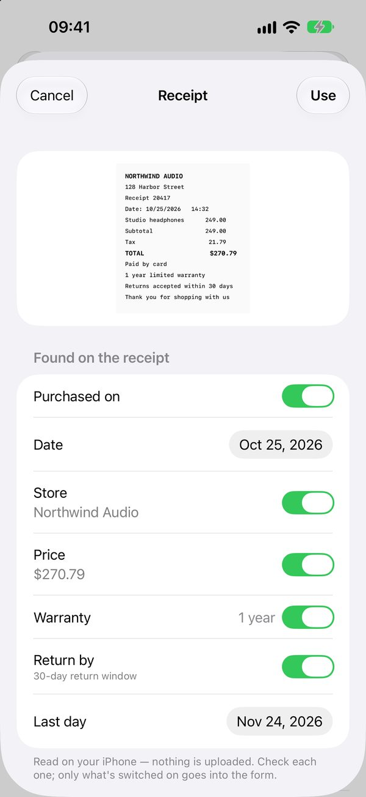
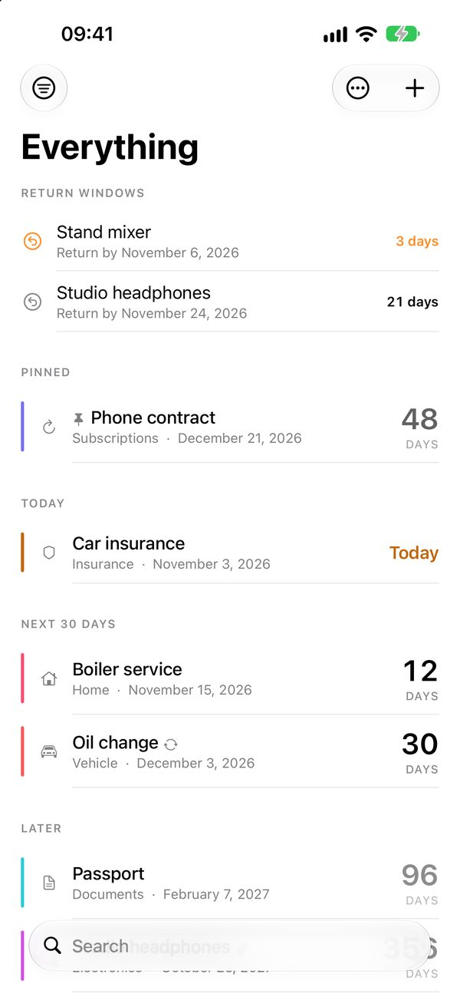
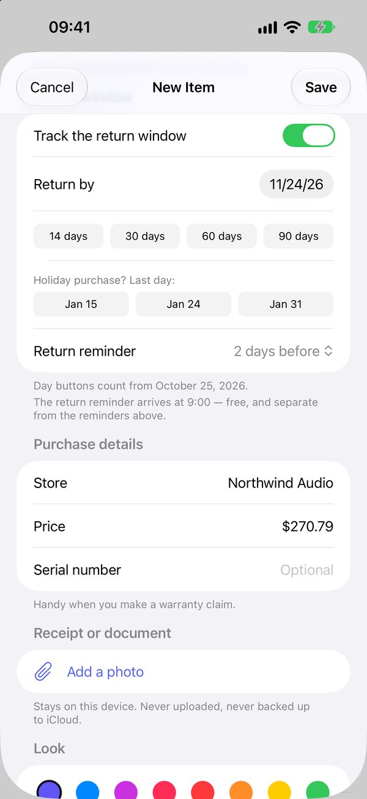

Never miss a return window or a warranty.
Scan the receipt, pick the last day, and Countdown reminds you before it closes. Warranties, renewals and documents live in the same calm list.
Free on iPhone. One optional purchase, never a subscription.



How it works
- Scan the receipt. Countdown reads the purchase date, store, price, warranty length and return window on your iPhone and shows them to you to check. Nothing is filled in without your OK.
- Pick the last day. Open return windows stay at the top of the list. From November to January, one-tap January dates help with holiday purchases.
- Get reminded. 7 days before, 2 days before or on the last day — your choice. The return reminder is free.
- Claim with everything at hand. Store, price and serial number stay with the item. With the unlock, attach the receipt and make a claim-ready PDF.
More than receipts
Passports and IDs, insurance, phone contracts, car and boiler service, appliance warranties. Each category asks the right question, so a warranty is “purchased on + 2 years”, not a date you have to work out.
Private by design
- No account and no sign-in.
- No ads, no analytics, no tracking. The developer collects no data.
- Receipts are read on your iPhone; nothing is uploaded.
- Back up everything, photos included, to one file you keep.
Questions
- Is it free?
- Up to 10 active items, reminders, receipt reading, return windows and backups are free; archived items don't count. One purchase adds unlimited items, widgets, repeating items, more reminders, receipt photos, the claim PDF and spreadsheet export.
- Does Countdown know each store's return policy?
- No. Policies change every year, so Countdown never guesses: you pick the last day from your receipt or the store's website, and it reminds you.
- Which languages?
- English, Turkish, German, French, Spanish, Japanese and Portuguese (Brazil) — and receipts in those languages are read too.